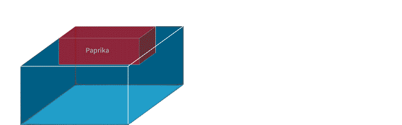
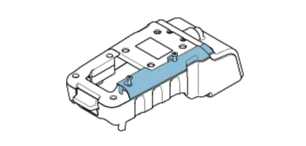
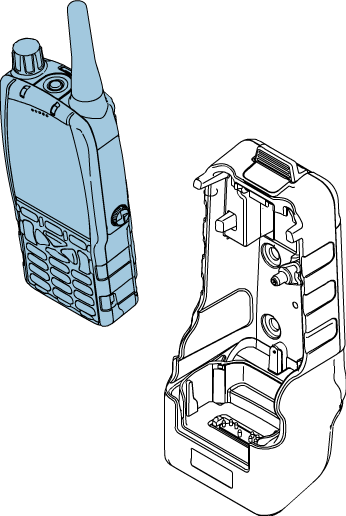

MOTION GRAPHICS
Cubing animation
This animation explains cubing: an algorithm used to determine how products can fit into containers.

HARDWARE INSTRUCTIONS
Communication hardware animations
Examples of how animation can improve user guides. The original Creo drawings weren't available, so images were taken from a user guide PDF, prepared in Illustrator and imported into Animate.


USER GUIDANCE
Radio user guide example
This example shows how animation can instruct users on operating a radio.
MECHANICAL PROCEDURE
Hardware example
A simple, unpolished example of an exploded view of a piece of hardware.
EXPLORE MORE
More writing examples
Browse other parts of my technical writing portfolio.
API documentationDeveloper-facing documentation and examples.View example →
Software writingSaaS and software documentation.View examples →
Hardware examplesUser manuals and technical product content.View examples →
Animation examplesInstructional visual content.View examples →
Video scriptsStoryboard and voice-over content.View examples →
Marketing copyProduct messaging and SEO content.View examples →